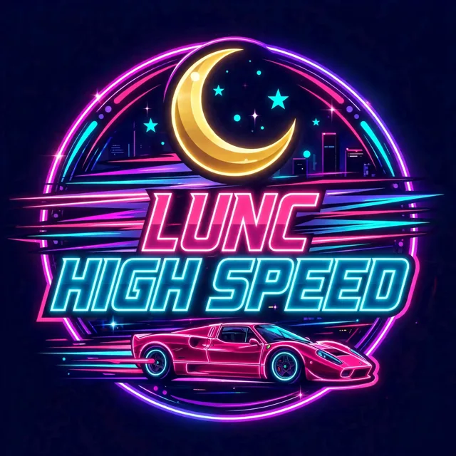

🕹️ Joystick: push UP = gas, DOWN = brake, LEFT / RIGHT = steer ⚡ HOLD the ⚡ NITROUS button to boost — the longer you hold, the faster you go 💥 Hit cars and they bounce off — never game over, just keep your speed up ♾️ INFINITY SPEED: the longer you go, the faster it gets — no top speed, no clock. The run ends only when you tap ⏹ END RUN — 🏆 score = distance + near-miss bonuses. Faster passes pay more!